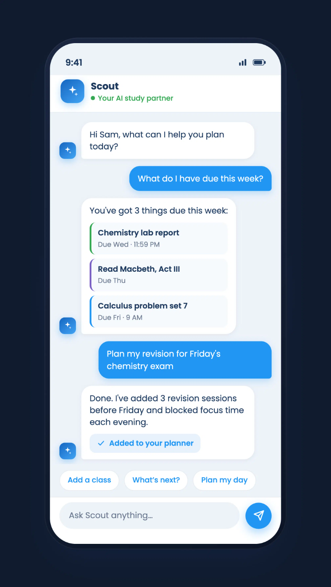
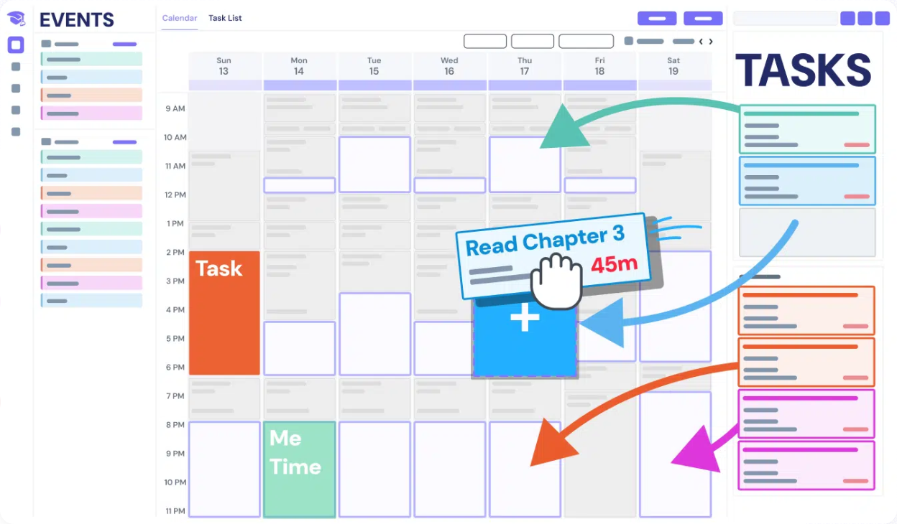
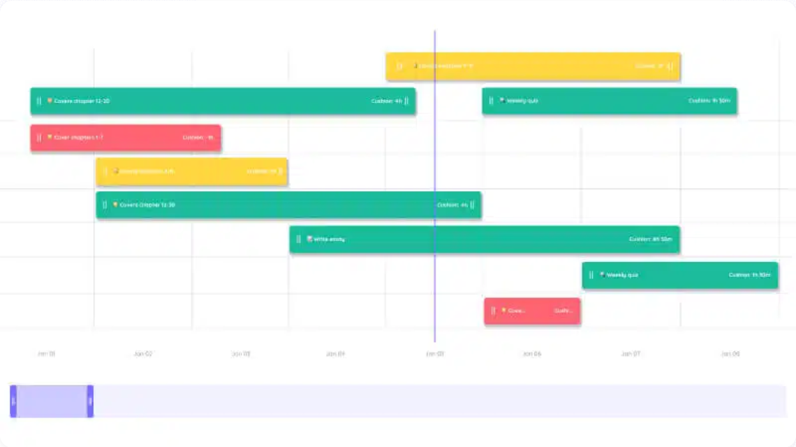
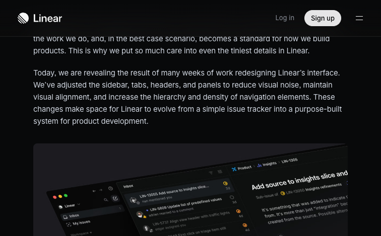
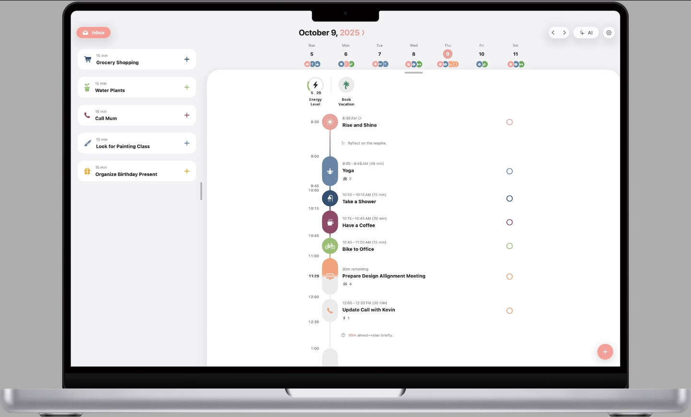

前端参考，先看怎么组织信息。
学生规划产品的结构，结合日常工作台的克制设计。观察日期：2026 年 10 月 13–14 日。
图中的产品界面来自官方公开宣传图片，未登录验证实际产品交互。REA 读取的是公开网页；这份资料没有恢复闭源应用的完整源码。点击图片可查看原尺寸。
MyStudyLife
课程身份 · 日期分组 · 局部进度

Shovel
任务 · 空闲时间 · 周安排

Linear
信息层级 · 平直任务行 · 低噪声
Structured
手机时间线 · 简短标题 · 连续任务

继续研究的官方入口
- MyStudyLife：功能与界面
- MyStudyLife：官方使用说明
- Shovel：学习时间规划
- Structured：时间线与跨设备界面
- Linear：2024 UI 改版过程
- Linear：2026 React 样式架构
- Goblin Tools：任务细分的产品参考
- TeachAthon 2025：往届官方项目档案
- TeachAthon 2026：官方活动材料
后续逆向研究可以比较公开页面的层级、响应式布局、可访问性与已加载资源。登录后的操作、同步算法和完整前端源码仍是未知，不能从营销网页推导。